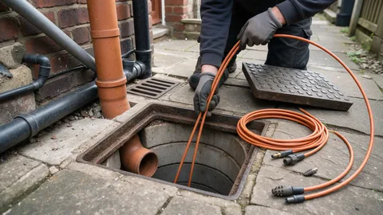
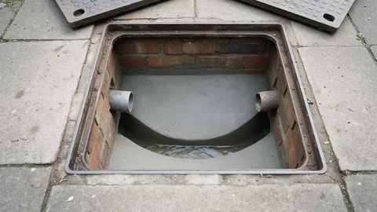
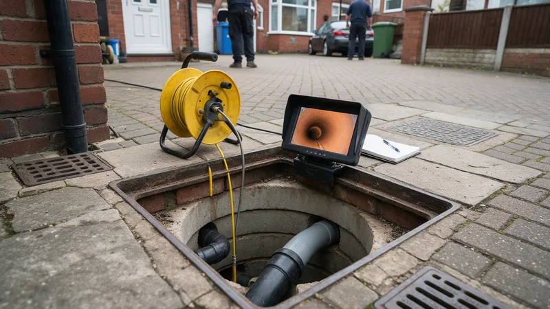

Our work
Twelve sample jobs.
Culvermill is a fictional firm, so none of these happened. They are the jobs a drainage firm round here actually gets week to week, with pictures generated for this demo. Filter them, or tap one for the detail.
12 jobs shown
 Generated photoShared run clearedSt Helens · sample
Generated photoShared run clearedSt Helens · sample Generated photoGully full to the rimPrescot · sample
Generated photoGully full to the rimPrescot · sample
Generated photoRodded from the low endMaghull · sample Generated photoJetted back to full boreSouthport · sample
Generated photoJetted back to full boreSouthport · sample Generated photoToilet that would not go awayFormby · sample
Generated photoToilet that would not go awayFormby · sample Generated photoCamera before anything elseSt Helens · sample
Generated photoCamera before anything elseSt Helens · sample Generated photoWhat came out of the pipeFormby · sample
Generated photoWhat came out of the pipeFormby · sample
Generated photoHow it should lookPrescot · sample Generated photoPatch liner, no digSouthport · sample
Generated photoPatch liner, no digSouthport · sample Generated photoWhen it has to come upMaghull · sample
Generated photoWhen it has to come upMaghull · sample Generated photoNew soakaway and land drainMaghull · sample
Generated photoNew soakaway and land drainMaghull · sample Generated photoGully pot and outletSt Helens · sample
Generated photoGully pot and outletSt Helens · sampleEvery picture here was generated for this demo. Nobody in them is a real person and no van, sign or packaging carries a real name. See photo credits.
What you are looking at
Why we photograph chambers.
It looks like an odd thing to put on a website. The reason is that an open chamber is the only honest picture in this trade. A finished kitchen looks finished. A cleared drain looks like nothing at all, unless you show the thing it was before.
So that is what these are: covers up, water running, and a camera read-out where there was one. The grainy pipe shots are what a survey actually looks like on the screen, not a diagram of one.

Survey 14.2m · sampleGenerated photoThe read-out is dressing for this demo. The distance is made up.
Want one of these looking at?
Tell us what it is doing and your postcode. If it is a repair you will get it in writing after somebody has seen it.